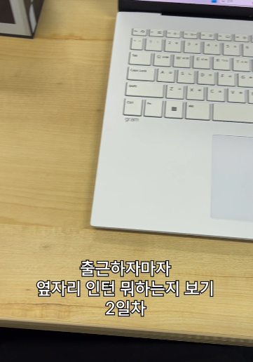

구름 AI 캠퍼스 프리즘 계정 성과 요약
선택한 기간 동안의 주요 인스타그램 지표입니다.
총 팔로워
22 → 77
175%
7.5 이전 대비
계정 도달
1,162 → 160,143
13,681.7%
7.5 이전 대비
콘텐츠 참여
129 → 2,534
1,864%
7.5 이전 대비
프로필 방문
221 → 7,061
3,095%
7.5 이전 대비
소개 링크 누름
15 → 201
1,240%
7.5 이전 대비
도달 및 노출 추이
팔로워 증가 추이
최고 성과 게시물 (Top 3)
모두 보기| 콘텐츠 | 업로드 날짜 | 조회수 | 도달 | 좋아요 | 댓글 | 공유 | 저장 | 평균 조회 시간 |
|---|---|---|---|---|---|---|---|---|
| 옆자리 인턴 뭐하는지 보기 4일차 | 2026.07.27 | 126,632 | 81,488 | 199 | 8 | 247 | 48 | 0:11 |
| 옆자리 인턴 뭐하는지 보기 3일차 | 2026.07.24 | 51,090 | 34,739 | 37 | 4 | 29 | 13 | 0:08 |
|
 옆자리 인턴 뭐하는지 보기 2일차 |
2026.07.22 | 32,750 | 24,598 | 131 | 6 | 273 | 31 | 0:08 |